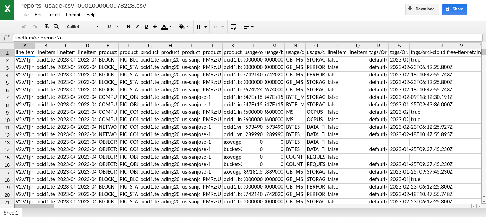
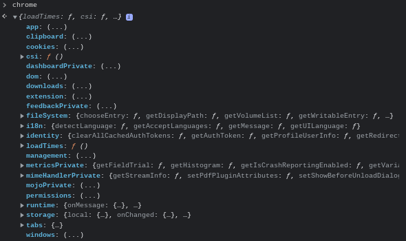
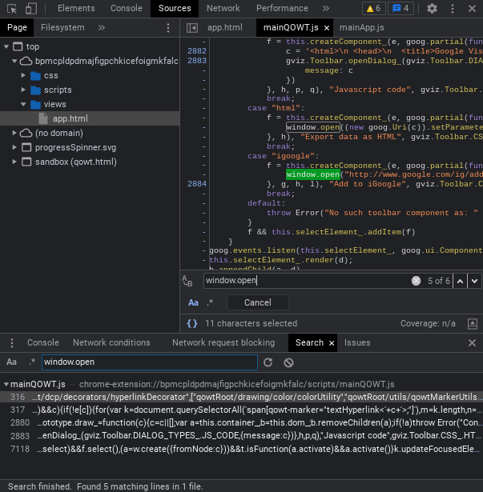
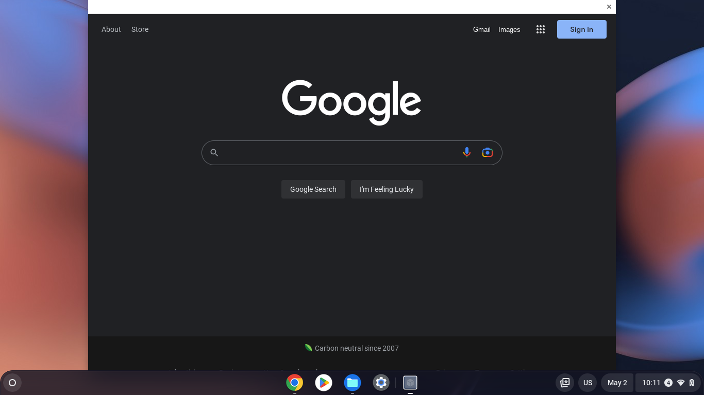

By ading2210 on 5/3/23
This blog post mainly attempts to explain the process in which I, along with Bypassi (Bypassi#7037), created QuickView , an exploit which allows for the creation of webview windows with arbitrary URLs. The exploit works even on managed accounts with features such as incognito mode disabled, allowing users to access pages that would normally be blocked via extensions.
If you haven't been in the whole "unblocking" community and don't know about Point-Blank, it's basically a trick which allows you to run arbitrary Javascript on privileged pages, such as
chrome://
and
chrome-extension://
URLs. It wouldn't really be considered an exploit though, since it's technically intended behavior.
There's a couple variations, but the main one works by the fact that whenever you open an
about:blank
page using
window.open
, a reference to the opener exists as the
window.opener
object. The important bit though, is that you are able to run bookmarklets (
javascript:
links) on this newly opened page, allowing you access to restricted Chrome APIs via
opener.chrome
, which removes the need for a full blown XSS vulnerability.
This isn't the exact method that's used for this exploit, but it demonstrates the general concept well enough, which is that certain opened tabs can retain the permissions of their parent.
A more detailed explanation can be found at Bypassi's website , as he is the one who originally discovered it.
QuickOffice is Google's editor for Microsoft Office files, which is built right into Chrome OS as a component extension. You may have also heard of it by the name "Office Editing For Docs, Sheets & Slides."
It was originally a mobile app for various PDAs developed way back in 1997 by some long-gone startup. It was eventually purchased by Google in 2013, who ported it to Android and Chrome OS to add Office support to those operating systems. After Google Docs became mainstream soon after, they discontinued it in early 2014.
However, for whatever reason, it still lives on in modern Chrome OS as a sort of last-resort editor for Office files. The way they implemented it was via a component extension, which is a regular Chrome extension that is built into the browser and can't be uninstalled. Other notable component extensions include ChromeVox and the Chrome OS virtual keyboard.
This whole rabbit hole all started when I opened a CSV file from the file manager.

After being surprised that Chrome OS could even open spreadsheets offline, I took a look at Devtools to see if there were any useful Chrome APIs.

And, wow! That was a whole lot more than I expected from just a basic word processor. Of course the next thing I thought was whether or not this could be abused.
I did a simple search for
window.open
in the sources tab to see if this was vulnerable to Point-Blank, and as it turns out, it was.

Most of them were used for toolbar entries that no longer existed (like what the hell is an iGoogle?), but some of them looked more promising. I told this to Bypassi, and because of his sheer skill, he was able to find a way to trigger Point-Blank pretty quickly.
The idea was basically to create an invalid link in the file QuickOffice was opening, such as
https://google.com/%00
, and when that link was clicked, it'd open an
about:blank#blocked
page.
On that page, there is no
opener
object, but
window.origin
is set to
chrome-extension://bpmcpldpdmajfigpchkicefoigmkfalc
. This allowed us to bypass CSP entirely, as Chrome still thought that the page belonged to the extension. Thus, we were able to simply create an iframe that embeds any QuickOffice page, which could then be accessed using
window.frames[0]
.
Now that we had a way to access the private Chrome APIs belonging to QuickOffice, all we needed to do now was find a useful payload.
Due to the sheer number of Chrome APIs exposed, finding something useful to do with them wasn't hard at all. We quickly found out that
chrome.identity.launchWebAuthFlow
could be used to open a completely unrestricted webview under the guise of a login prompt. Additionally,
chrome.extension.getBackgroundPage
could be used to get the background page of the extension and make our payload persistent until a reboot.

Here is the bare-bones POC that we initially came up with:
let
iframe
=
document
.
createElement
(
"iframe"
);
iframe
.
src
=
"chrome-extension://bpmcpldpdmajfigpchkicefoigmkfalc/views/app.html"
;
iframe
.
style
.
display
=
"none"
;
iframe
.
onload
=
()
=>
{
chrome
=
window
.
frames
[
0
].
chrome
;
console
.
log
(
chrome
);
alert
(
"Payload success! Check the console."
);
chrome
.
identity
.
launchWebAuthFlow
({
url
:
"https://google.com"
,
interactive
:true},
e
=>{});
}
document
.
body
.
append
(
iframe
);
Of course, this isn't very polished or easy to use, so I spent the next few days working on a nice way to embed the whole thing and a decent GUI.
One of the considerations I had while making the website was to try to make it as easy as possible, as well as to hide the QuickOffice component entirely from the user. The final payload itself is fairly straightforward; I just define an HTML string and do
document.write
to the page, then setup some event listeners. Bypassi also had the idea to set up a tab listener in order to re-launch the webview whenever a specific link was visited, which in this case is
https://www.google.com/#%20
.
Now, hiding QuickOffice from an exploit literally named after it was incredibly annoying and finicky. Embedding the document with the invalid link is pretty easy, you just iframe a .docx file and it'll open in QuickOffice. Issue is, that looks boring and unprofessional, and we wanted to make this seem more complicated than just a couple of iframes.
To do this, we used a technique called clickjacking , in which the user clicks on a page, but that click actually goes through to some element that's hidden below. With this implementation, it works by simply cutting off parts of the iframe using CSS absolute positioning and hiding any overflow.
However, it breaks whenever the user changes their page zoom or their monitor DPI. To resolve this, I implemented a check for the browser zoom level, which would throw up a warning if it's not detected as 100%. I also wrote a standalone version that consists of a single .docx file that can be opened, in case this method fails.
QuickOffice also displays a prompt on the first time it's launched, so the counter this, we centered the iframe around the "Got it" button, and zoomed it in a bunch so that the text would not be visible. Then we could just throw our own custom text over it, so that it looks no different from a regular HTML button. Also, to make sure that the user would always hit the link, we just made the embedded document contain a link consisting of unicode characters that filled the entirety of the page.
At this time, I also drew up a logo to make it look a bit more professional.
So, what was this all for? Well, for starters, because QuickOffice is found on every single Chrome OS device, its the first universal webview exploit found so far. Thus, it should work on any managed Chromebook which has bookmarklets allowed. I'm sure this has a lot more potential outside of just unblocking a few pages, so feel free to experiment with the exploit yourself.
If you want to check out the finalized proof of concept, I've deployed it to Cloudflare Pages for easy access. If you don't have a Chromebook but still want to see the source code, I've published it on Github as well.
I'd once again like to thank Bypassi for helping with this, specifically by finding a way to trigger Point-Blank, as well as for finding the
chrome.identity
payload.
Funnily enough, at the same time I was writing this blog post, Bypassi discovered and released LTMEAT , which is a much simpler and more practical exploit allowing for the disabling of virtually any Chrome extension. Use that instead if all you care about is unblocking stuff on your school Chromebook.